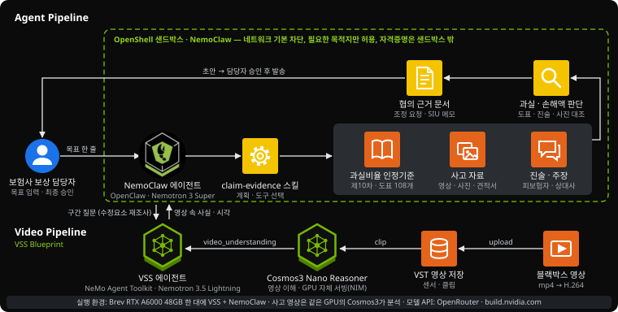

교통사고가 나면 보험사 보상 담당자는 누가 몇 % 잘못했는지(과실비율)와 차 수리비를 상대 보험사·정비공장과 합의해야 합니다. 이 에이전트는 블랙박스 영상·과실비율 인정기준·진술·견적서를 조사해 합의에 쓸 근거 묶음 초안을 만듭니다.
교통사고 보상이 늦어지는 건 판단이 어려워서가 아니라 근거를 만드는 데 손이 많이 들어서입니다. 그 사이 합의가 틀어져 연 15.7만 건이 분쟁심의로 갑니다.
보상 담당자(대물 손해사정)는 사고마다 상대 보험사와 과실비율을, 정비공장과 수리비를 합의합니다. 근거를 위해 영상을 여러 번 돌려 보며 해당 기준 도표를 찾고, 방향지시등을 켰는지 같은 가감 사유가 몇 초에 보이는지 직접 정리합니다. 합의가 안 되면 협회 심의위원회(분쟁심의)로 넘어갑니다.
claim-evidence/SKILL.mdcli case C006vss vlm runcli candidatescli estimatecli anomalycli letter 인자 오류 2회 → 스키마를 읽고 스스로 수정| 수정요소 | 가감 | 상태 | 근거 시각 |
|---|---|---|---|
| 진로변경 신호불이행·지연 | +10 | 영상에서 확인 | 0–5초 방향지시등 미점등 |
| 버스·다인승전용차로 위반 | +10 | 확인되지 않음 | – |
| 고속도로 추월차로로 변경 | +10 | 확인되지 않음 | – |

그림 — 에이전트·스킬·자료는 OpenShell 샌드박스 안에서 돌고, 영상은 같은 GPU의 VSS(Cosmos3)가 분석합니다.
| 구성요소 | 이 프로젝트에서 한 일 | 근거 |
|---|---|---|
| 에이전트 실행과 보안 | ||
| NemoClaw · OpenClaw | 에이전트 하네스. 스킬을 읽고 도구 호출 순서를 스스로 정함 | scripts/brev/02_connect_nemoclaw_vss.sh |
| OpenShell | 샌드박스. 네트워크 기본 차단 후 VSS 등 필요한 목적지만 허용, API 키는 샌드박스 밖 제공자에 보관 | scripts/brev/04_use_openrouter.sh |
| 영상 이해 | ||
| VSS Blueprint | 영상 저장(VST)과 영상 질의응답 에이전트(NeMo Agent Toolkit 기반, Phoenix 추적). A6000 한 대에 배포 | scripts/brev/01_deploy_vss.sh |
| Cosmos3 Nano Reasoner | 블랙박스 영상 이해 모델(NIM), GPU에서 직접 서빙 | scripts/brev/vss_ask_clip.sh |
| 모델과 스킬 | ||
| Nemotron 3 Super · 3.5 | 에이전트의 계획·도구 호출(3 Super), VSS 에이전트의 LLM(3.5 Lightning) | scripts/brev/04_use_openrouter.sh |
| vss-ask-video 스킬 | NVIDIA 공식 스킬. 수정요소마다 영상 구간 질문 | 샌드박스 스킬 목록 |
| claim-evidence 스킬직접 작성 | 도메인 절차와 도구 8종(사고 건 목록·조회, 후보, 도표, 진술 대조, 견적, 이상징후, 협의 문서) | skills/claim-evidence/SKILL.md agent/cli.py |
검수에서 라벨 오류(앞차 후진을 추돌로 표기 등)와 역할반전을 찾아 뺐고, 10차 개정으로 기본과실이 바뀐 6건은 현행 기준으로 고쳤습니다.